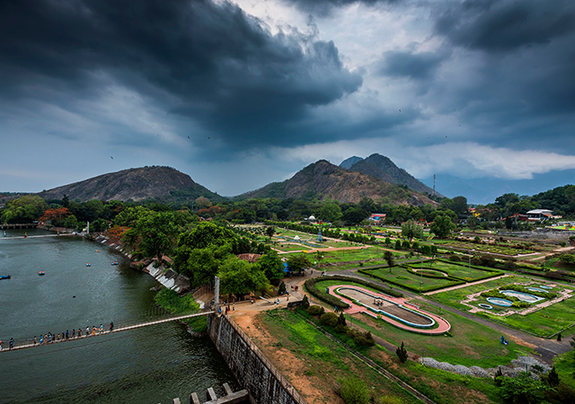
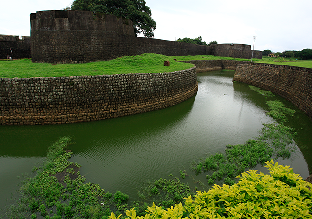
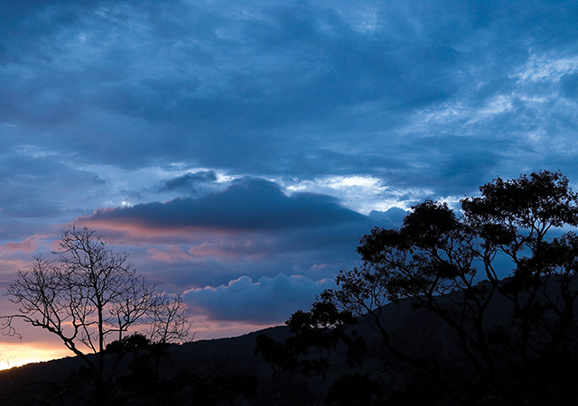
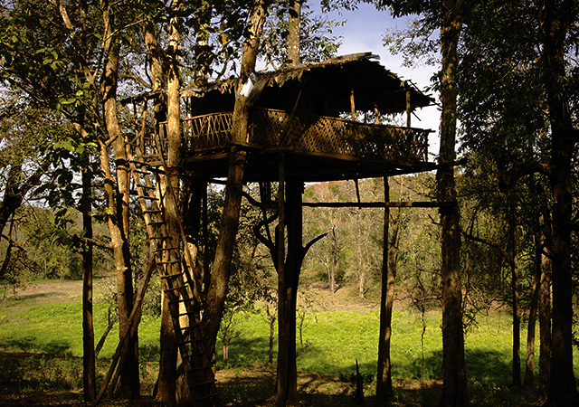
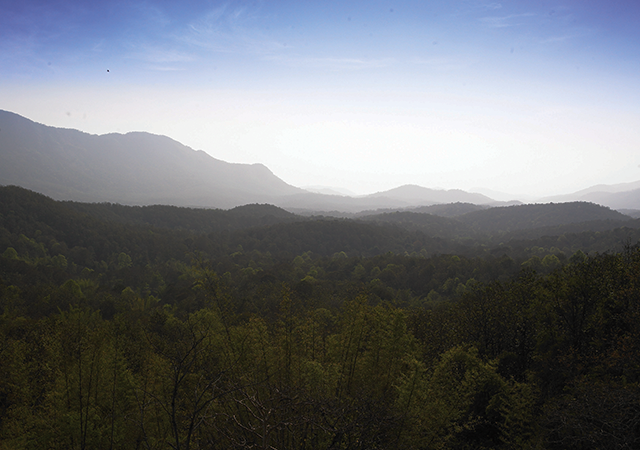

The district of Palakkad known as the granary of Kerala, is a land of valleys, hillocks, rivers, forests, mountain streams, dams and irrigation projects. Situated at the foot of the Western Ghats , this is the gateway to Kerala from the north.Palakkad derives its name from the Malayalam words Pala ( Alsteria scholaris) and Kadu (forest) which goes to prove that this place was once a beautiful stretch of forests covered with the sweet scented flowers of the Pala tree.
1.Malampuzha Dam and Rock Garden
Malampuzha Dam is believed to be the largest reservoir in Kerala. The dam is built atop Malampuzha River, a tributary of Bharathapuzha. Another major attraction near the dam is the Malampuzha Gardens.Another admired tourist location near the Malampuzha Dam is the Rock Garden. It is believed that the late Nek Chand, the man behind the Rock Garden in Chandigarh is also the brain behind this architectural marvel.

2.Tipu Sultan Fort
Tipu Sultan Fort, situated in the heart of Palakkad town, is also known as the Palakkad Fort and is a huge and awe-inspiring one. It was built by Haider Ali in 1766 AD. Interestingly, there is a magnificently built Hanuman Temple within its interiors.The Fort itself has a magnificent and captivating architecture and an interior that speaks volumes of the architectural brilliance of that period. It is believed that Palakkad Fort served as a communication link between Palakkad and Coimbatore.

3.Neliampathy Hills
The magical, cloud-caressed Neliampathy Hills mesmerizes you with its sheer beauty. Situated in Nenmara in Palakkad, you will have to take about 10 hairpin bends to reach Neliampathy. On the way, you can see carpets of paddy fields in their full glory.You can also see a plethora of private farms too, adding to the greenery and quaintness of the place. Jungle safari packages are available by which you can explore the exotic wildlife of this paradise.

4.Parambikulam Wild life Sanctuary
When nature and wildlife beckon you, there is nothing to do but succumb to it. Parambikulam Wildlife Sanctuary with its 39 species of mammals, 16 species of amphibians, 268 species of birds, 47 species of fishes, 124 species of butterflies, 1049 species of insects, 61 species of realities and innumerable varieties of flora, make it a wildlife paradise.It is situated 95 kilometres from Palakkad, but definitely worth the trip. It will truly be a memorable experience when you observe wildlife in their natural habitat.

5.Silent Valley National Park
It is interesting to note how Silent Valley National park got its name. Though rich in biodiversity with substantial flora and fauna, the absence of cicadas is very prominent at the park. Probably that’s why this core area of Nilgiri Biosphere got its name, Silent Valley.You can glimpse the River Kunti descending from an altitude of 2000 meters above sea level, 200 species of butterflies, 150 species of birds, 128 species of beetles and 16 endemic bird varieties at the park.
